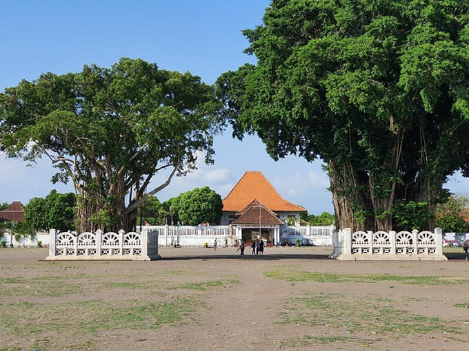
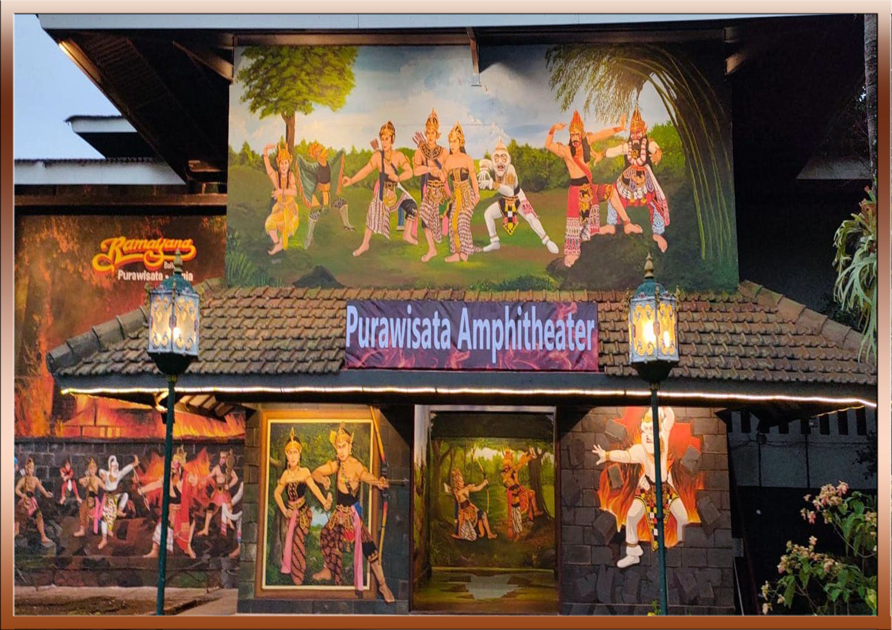

<!DOCTYPE html>
<html>
<head> 
    <title>Leaflet Web Map</title>
    <link rel="stylesheet" href="https://unpkg.com/leaflet@1.9.4/dist/leaflet.css" /> 
    <script src="https://unpkg.com/leaflet@1.9.4/dist/leaflet.js" ></script>
    <style>
        #map {
            width: 100%;
            min-height: 97vh;
            box-sizing: border-box;
            padding: 20px;
        } 
    </style>
</head>
<body>
    <div id="map"></div> 
    <script>
        var map = L.map('map',{
        center: [-7.801533, 110.381156],
        zoom: 15
        });

        L.tileLayer('http://{s}.tile.osm.org/{z}/{x}/{y}.png', {
            attribution: '&copy; <a href="http://osm.org/copyright">OpenStreetMap</a> contributors'
            }).addTo(map);

        var marker = L.marker([-7.81016, 110.35901]).bindPopup('<b>Kampung Wisata Taman Sari<br></img><br>★★★★★ (5/5)').addTo(map);
        var marker = L.marker([-7.8055, 110.397]).bindPopup('<b>Gembira Loka Zoo<br></img><br>★★★★★ (5/5)').addTo(map)
        var marker = L.marker([-7.81191, 110.36321]).bindPopup('<b>Alun-Alun Kidul Yogyakarta<br></img><br>★★★★★ (5/5)').addTo(map)
        var marker = L.marker([-7.79113, 110.38147]).bindPopup('<b>Taru Martani Coffe & Resto<br></img><br>★★★★★ (5/5)').addTo(map)
        var marker = L.marker([-7.78778, 110.37428]).bindPopup('<b>Stadion Kridosono<br></img><br>★★★★★ (5/5)').addTo(map)
        var marker = L.marker([-7.80888, 110.37058]).bindPopup('<b>Ramayana Ballet Purawisata<br></img><br>★★★★★ (5/5)').addTo(map)
        
    </script>
</body>
</html> 